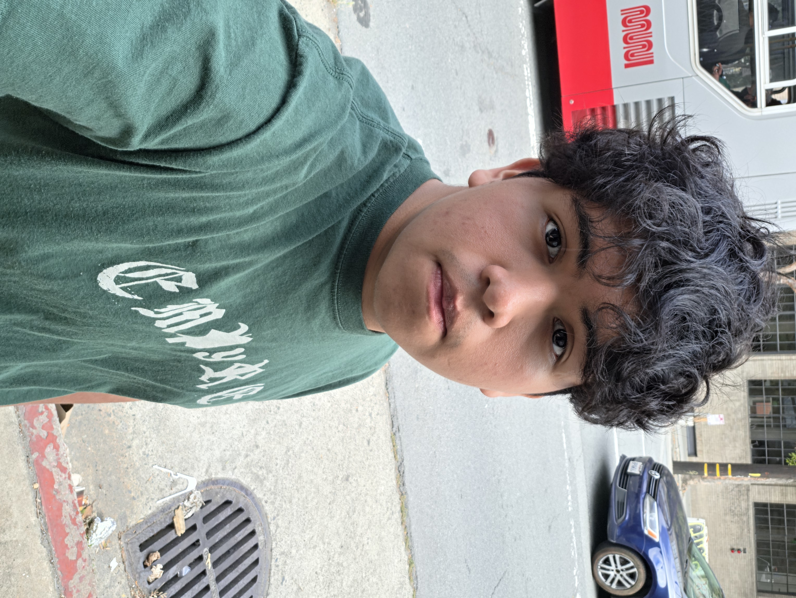

I come to the United States when I was 12 years old, and to be honest I feel really happy about make this decision with my family, because I feel that if we stay in my homecountry I will never be able to advace that much as I have advance like I advance here, and probally I will don't have this much enthusiasm that I have about be envolve with the tech industry and also I will never take the change to try to come into this industry. I start know that I was interested on tecnology since I was a kid, I have been always a curius person and for me when I was a kid tecnology was some type of sorcery because I have never understand how it was possible that some dedvice that interested exist. I really get into tech after I try my first video game I continue remenber that day when one day I start using a joystic and start playing a video game with my brother.
I just have complete high school, but I take the opportunity to take a pre-apprendiship in summer that have change my life in a big way I feel that now I have get more education that I have never get in my life thaks to this program now I get a lot of knowleg in Codin langue, in Iot coding and how build a circut and undertand how it work, thaks to it start get some termonology and hands on practice, Critical Carrer have help me developme foward a lot of skills and also have some more knowleg on how get prepare to a interview and why networking with people is important, and Into Coding have help me have a better on how use LMM models work and how take a appopeate advance of it and what are the pros and cons of it.
I have this section just to make sure I really show how happy and welcom I have feel been part of Dev/Mission and how all the Staff have make me feel welcom into the tech industry and that I have a great future, but as our Great founder and Ceo says that only depens on my hands
I also want to show some words to my classmates because without them I feel that this program will feel a lot different and even when don't know each other that well in the begining I feel that now we have a great and genualy link and that I really like spend this summer with you guys and I hope we can continue work together
I will like to list some of the skills I have adquire thrug this program and that I have before it first I will like to show my technical skills Money manager How make orders How use Google Calendar How use Gmail Some knowledge on Coding Inventory knowledge Taking Care of Kids Maintenance Google Sheets. Knowledge on the history of computers. Know how to use tools for tech purposes. How use HTML How use CCS How use a arduino Some knowledge using booststrap and now my soft skills Time manager. Communication Quick learn How give instructions Independent Good on Follow instruction Critical Thinking. Good Speaking in front of people. Solving Skills. Search Skills. a fun fact about one of my skills is that I feel more comfortable talking infront of strange people that the people I know.
This are some goals I hope I can complete on the pass of the years like become a owner of my personal company, but first I need to gain the experience and knowleg so I will start try by getting some certificates and also complete anothers programs and trying to gain more experience by getting some interships this will be my goals for the moment I will need to keep adding thru the pass of time.
Right now I would like to talk about the future of me into 2 years, so first I hope I have complete a least 4 or 5 certificastea and have gain some experience and that I have recive the opportunity to work on a company